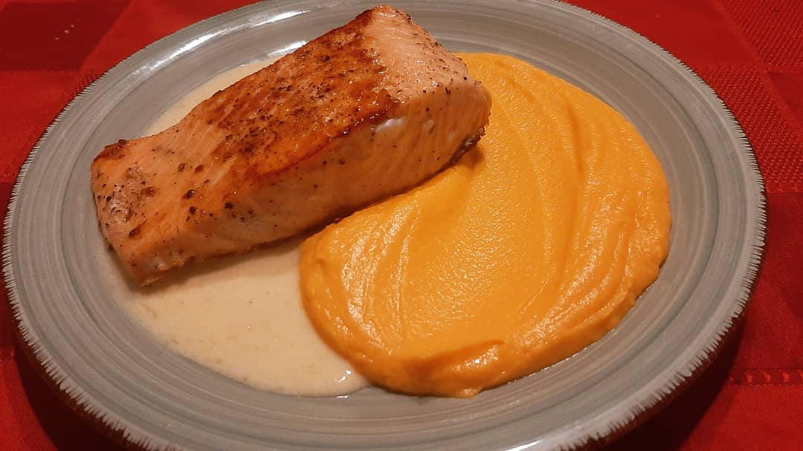

Citrónová omáčka podľa @rozsypallukas — Normy Jedál
Losos s batátovým pyré a citrónovou omáčkou.
#vecere #dinner #losos #salmon #batatovepyre #sweetpotato #sweetpotatoes #citronovaomacka #lemonsauce #vareni #varenidoma #varenijeradost #foodstagram #foodblogger #foodlover #food #cookinglife #cookinglove #cookingathome #cooking #cook